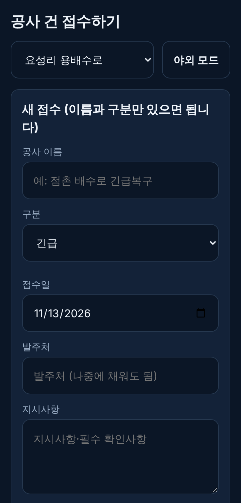
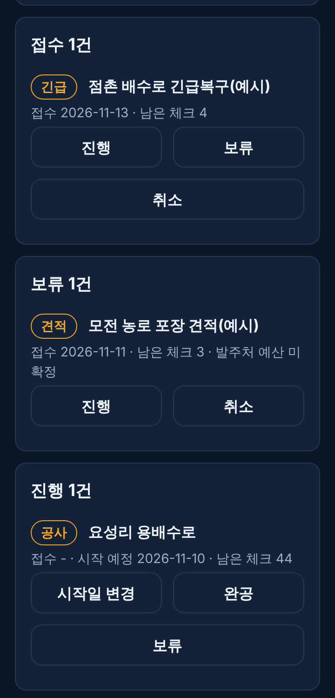
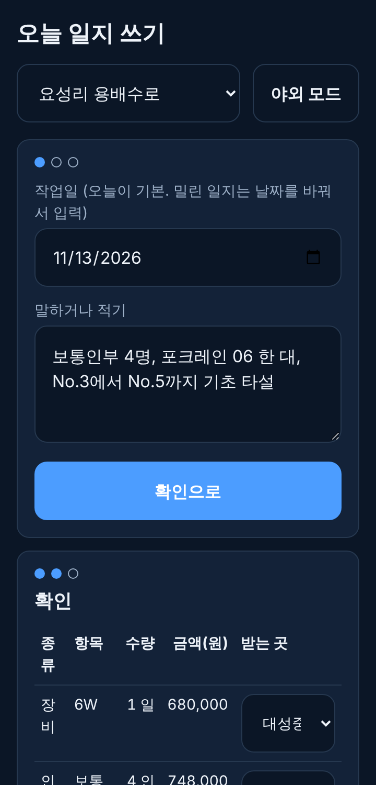
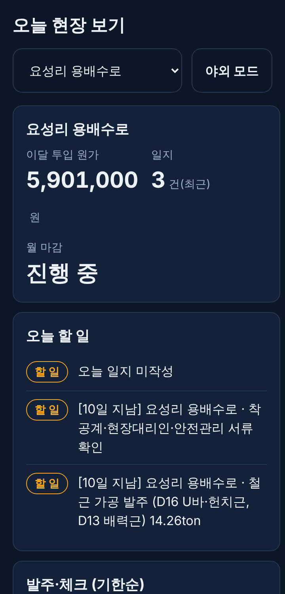
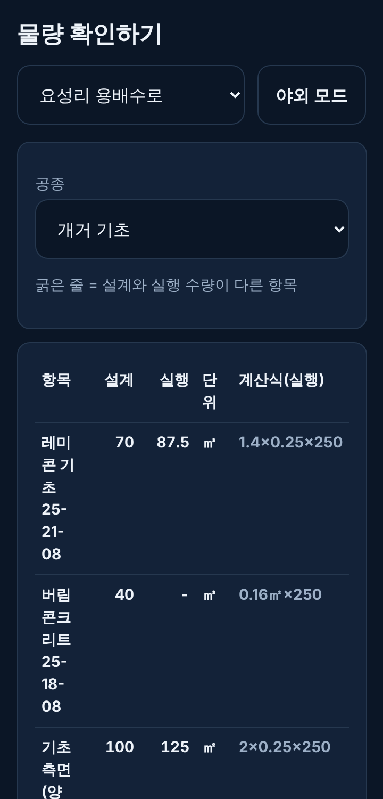
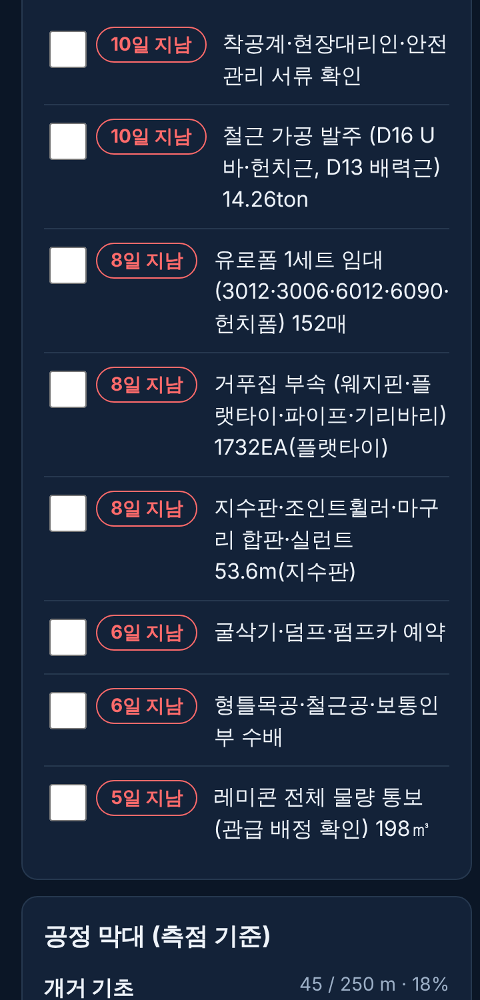
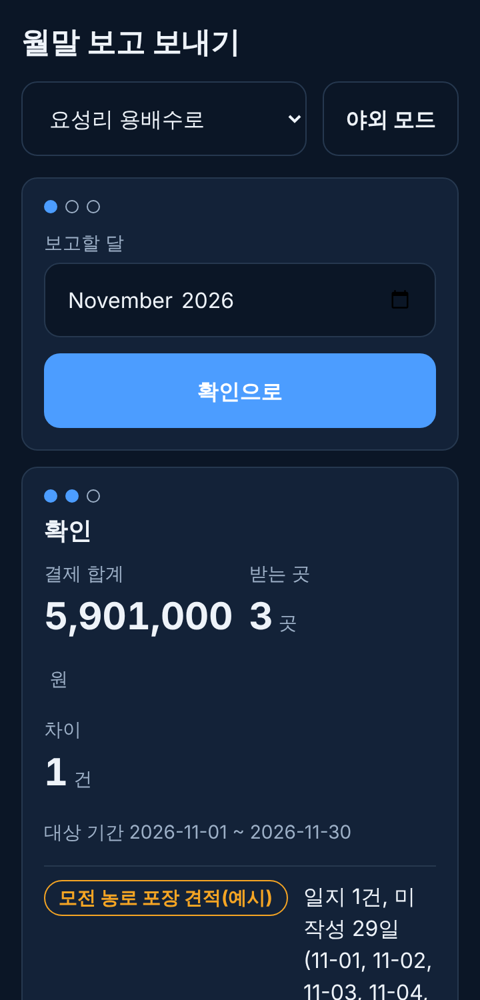

| 1장 · 이 앱은 어떻게 돌아가나 (5분 읽기) | 기본 |
| 2장 · 지금 되는 것과 안 되는 것 | 기본 |
| 3장 · 설치: 집 PC 서버, 폰 앱, 둘을 잇기 | 기본 |
| 4장 · 하루 사용 순서 (이것만 알면 내일부터 쓴다) | 기본 |
| 5장 · 공사 건 접수: 접수 → 보류 / 취소 / 진행 → 완공 → 민원 | 기본 |
| 6장 · 업무일지: 모든 것의 출발점 | 기본 |
| 7장 · 여러 현장을 하루에 뛰는 날 | 중급 |
| 8장 · 시작 예정일과 발주·체크 알림 | 중급 |
| 9장 · 동기화와 충돌 검토 | 중급 |
| 10장 · 물량, 배정 자재, 설계변경 후보, 원가 경보 | 중급 |
| 11장 · 월말 보고: 확인 → 전송 → 마감 → 정정 | 중급 |
| 12장 · 거래명세서 대조 | 중급 |
| 13장 · 연동 로직: 값의 주인은 하나 | 심화 |
| 14장 · 유의사항과 자주 하는 실수 | 심화 |
| 15장 · 문제가 생겼을 때 | 심화 |
| 16장 · 심화: 단가, 백업·복구, 서버 옵션 | 심화 |
| 17장 · 첫 주 실사용 시험 체크리스트 | 실습 |
| 부록 · 용어 풀이 / 아직 만들지 않은 기능 / 온새의 가정값 | 참고 |
한 문장으로: 현장에서 폰에 한 번 입력한 업무일지가 집 PC로 올라가서, 결제 집계·월말 보고·자재 대비·발주 알림으로 저절로 이어집니다.
| 구성 | 하는 일 | 인터넷 |
|---|---|---|
| 폰 앱 (갤럭시 폴드7) | 접수, 업무일지 입력, 할 일 체크. 모든 입력은 폰 안에 먼저 저장됩니다. | 없어도 됨 |
| 집 PC 서버 | 자료를 모아 보관하고, 물량 계산·발주 일정·월말 보고 Excel·백업을 맡습니다. PC 화면(브라우저)으로도 입력할 수 있습니다. | 폰과 맞출 때만 필요 |
접수하는 순간 그날 일지에 [접수·긴급] 공사 이름 한 줄이 남습니다. 그 뒤의 투입, 시공 구간, 민원까지 모두 같은 공사 건의 일지에 쌓입니다. 그래서 일지가 틀리면 뒤가 전부 틀립니다. 이 설명서의 절반이 일지인 이유입니다.
첫 실사용 시험판입니다. 되는 것은 테스트로 확인한 것만 적었습니다.
| 기능 | 폰 앱 | PC 화면(서버) |
|---|---|---|
| 공사 건 접수·보류·취소·진행·완공 | 됨 (홈의 「공사 건」) | 전부 + 민원 접수 |
| 업무일지 입력 | 줄 단위 입력, 작업 없음 | 말로(글로) 쓰는 일지 |
| 발주·체크 알림 | 보기, 체크 (일정은 맞추기 뒤 내려옴) | 보기, 체크, 일정 만들기 |
| 동기화·충돌 검토 | 됨 | (서버가 받는 쪽) |
| 물량(개거·농로포장), 설계/실행 비교 | – | 됨 |
| 배정 자재 대비, 설계변경 후보, 원가 경보 | – | 됨 |
| 월말 보고 Excel 내려받기 | – | 됨 |
| 대표이사 메일 전송·월 마감 | – | 기능은 있으나 화면 버튼 없음(16장) |
| 백업 3곳 | – | 명령으로 실행(16장) |
아직 만들지 않은 것: 사진 촬영·사진대지(HWPX/HWP), 스마트 야장 화면, 입찰 분석, 도면·내역 자동 분석, PowerPoint, 연보. 자세한 것은 부록 B.
온새 폴더 안에 온새_진성현장앱 폴더를 둡니다. (GitHub Hwang 저장소, ccr-cdf19bb2-c1oc6t 브랜치에 있습니다.)cd "$env:USERPROFILE\OneDrive\Desktop\온새\온새_진성현장앱\server" python -m pip install openpyxl python -m jinsung.api --demo브라우저에서
http://127.0.0.1:8765 를 열면 요성리 예시 자료가 든 화면이 나옵니다. 둘러보기용이고, 끄면 사라집니다.python -m jinsung.api --db "D:\진성현장\jinsung.db"
온새_진성현장_0.1.apk 파일을 폰에서 누릅니다.폰과 PC를 Tailscale(개인용 연결 앱)로 묶습니다. 공유기 포트는 열지 않습니다.
$env:JINSUNG_TOKEN = "영주형이 정한 긴 글자" python -m jinsung.api --db "D:\진성현장\jinsung.db" --host 100.x.x.x
http://100.x.x.x:8765, 토큰에 같은 글자 → 지금 맞추기.--host 0.0.0.0 과 PC의 내부 주소(192.168.x.x)를 써도 됩니다. 이때도 토큰은 꼭 정하세요. 토큰 없이 띄우면 같은 망의 누구나 볼 수 있습니다.| 언제 | 무엇을 | 어디서 |
|---|---|---|
| 공사 건이 들어온 즉시 | 접수: 이름·구분·연락처·지시사항. 답사 전이라도 먼저 넣습니다. | 폰 「+ 접수」 또는 PC 「접수」 |
| 아침 | 홈의 오늘 할 일 확인 (발주·체크 기한, 미작성 일지) | 폰 홈 |
| 작업 중·끝난 뒤 | 일지: 현장 고르기 → 작업일 → 투입 한 줄씩 저장 | 폰 일지 |
| 현장을 옮길 때 | 위쪽 현장 칸을 바꾸고 이어서 입력 | 폰 |
| 저녁(집 또는 통신 되는 곳) | 지금 맞추기 한 번. 충돌이 있으면 고르기 | 폰 동기화 |
| 발주·확인을 끝냈을 때 | 할 일에 체크 | 폰 홈 / PC 홈 |
| 월말 | 보고 탭 → 확인 → Excel 내려받기 → 대표님 전송 | PC |
[접수·구분] 이름 — 지시사항 ③ 구분에 맞는 필수 확인사항 체크 목록.| 구분 | 자동으로 생기는 확인사항 |
|---|---|
| 긴급 | 현장 위치·진입로 확인 / 피해 범위 사진(전) / 발주처 지시 내용을 문서(문자)로 받기 / 장비·인력 즉시 수배 |
| 견적 | 현장 답사 / 물량 실측 / 견적서 제출 기한 확인 |
| 수의 | 현장 답사 / 계약 금액·공기 확인 / 도면·내역 수령 / 착수 서류 확인 |
| 입찰 | 공고문 자격 조건 / 현장 설명회·답사 일정 / 투찰 마감 일시 / 내역서 수익성 검토 |
| 민원 | 민원인 연락 / 현장 확인·사진 / 원인 판단 / 처리 결과 통보 |


그림은 PC 화면(예시 자료)입니다. 폰 앱은 맨 위 「+ 접수」 단추로 같은 내용을 넣고, 홈의 「공사 건」 칸에서 진행·보류·취소·완공을 누릅니다.
| 상황 | 누르는 것 | 결과 |
|---|---|---|
| 예산 미확정 등으로 멈춤 | 보류 + 사유 | 자료를 그대로 보관. 알림은 멈춤. 「진행」으로 되살림 |
| 취소, 돈이 안 들어감 | 취소 + 사유 | 파기: 공사 건·일지·체크·연락처가 지워짐. 이력에는 "취소 파기: 사유"가 남음 |
| 취소, 답사비 등 투입이 있음 | 취소 + 사유 | 보관: '취소' 상태로 남고 새 일지는 못 씀. 들어간 돈은 결제·연말 집계에 그대로 잡힘 |
[민원] 내용이 남고, 처리에 들어간 인력·장비도 같은 현장 일지에 씁니다. 공사 하나의 처음부터 민원까지가 한 곳에 모입니다.도면·내역을 받으면 대화창에서 온새에게 파일을 주세요. 지금은 온새가 대화에서 직접 읽고 검토해 결과(물량, 확인 필요 사항)를 드립니다. 요성리 도면을 그렇게 분석했습니다. 앱 안에서 파일을 올리면 자동으로 분석되는 기능은 아직 없습니다(부록 B).
| 칸 | 넣는 법 | 예 |
|---|---|---|
| 수량 | 인력은 공수, 장비는 일. 반일은 0.5 | 보통인부 4 / 6W 0.5 |
| 받는 곳 | 돈을 받을 사람·업체. 결제 집계의 단위 | ○○중기, 김반장 |
| 측점 | No.2+10 형식. 3+15, no 4 도 됨 | 시작 No.3 / 끝 No.5 → 40m |
PC 화면 「일지」 탭에 문장으로 적으면 칸이 채워집니다. 저장 전에 확인 화면이 한 번 나옵니다.
보통인부 4명, 포크레인 06 한 대, No.3에서 No.5까지 기초 타설 덤프 25톤 두 대, 06W 반일, 레미콘 25-21-08 12루베 반입

지금 폰 앱에는 저장한 줄을 고치는 단추가 없습니다. 잘못 넣었으면 온새에게 말하거나, 반대 방향으로 맞추지 말고(음수 금지) 다음 판에서 넣을 수정 기능을 기다려 주세요. 급하면 PC에서 온새가 고쳐 드립니다. 첫 주 시험에서 가장 먼저 보완할 부분입니다.
큰 공사를 하면서 긴급 건을 오전·오후로 나눠 뛰는 날이 있습니다. 규칙은 하나입니다: 현장마다 따로 일지를 쓴다. 작업일은 같아도 된다.
| 상황 | 입력 방법 |
|---|---|
| 오전 긴급 A, 오후 긴급 B | 현장 A를 고르고 투입 저장 → 현장을 B로 바꾸고 투입 저장. 같은 날짜에 일지가 두 개 생깁니다. |
| 인부가 A에서 반나절, B에서 반나절 | A에 0.5, B에 0.5. 그 사람 결제는 합쳐서 1공수, 원가는 현장별로 0.5씩. |
| 굴삭기 하루를 두 현장이 나눠 씀 | A에 0.5일, B에 0.5일. 업체 결제는 1일분 한 번. |
| 요성리는 목수팀이 계속 작업, 나는 긴급 건에 | 요성리 일지에 목수팀, 긴급 현장 일지에 내 쪽 투입. 서로 섞이지 않습니다. |
| 어디에도 안 속하는 비용(공구 수리 등) | '본사·공통' 현장에 넣습니다. '현장 없음'은 없습니다. |
현장별 물량·작업자·장비는 각 현장 일지에 따로 쌓이므로, 월말 보고의 「결제요약」에서 받는 곳 한 줄에 현장별 금액이 가로로 나뉘어 나옵니다. "얼마를 줘야 하나"와 "어느 현장 돈인가"가 한 줄에 보입니다.
공사를 「진행」으로 바꾸면서 시작 예정일을 넣으면, 그 날짜에서 거꾸로 세어 언제까지 무엇을 해 둬야 하는지 할 일이 만들어집니다.
| 기한 | 할 일 |
|---|---|
| 시작 3일 전 | 작업 인원·직종 확정 / 장비 기종·대수 예약 |
| 시작 2일 전 | 자재 물량 확정·발주 (레미콘·와이어메쉬·거푸집 등) |
| 시작 1일 전 | 날씨 확인 (우천·한파 시 타설 불가) |
| 시작일 / 다음 날 | 착수 전 사진 / 작업 후 사진·발주처 확인 |
물량이 같이 붙습니다. 12월 1일 시작으로 넣으면:
| 기한 | 할 일 | 물량 |
|---|---|---|
| 7일 전 (11/24) | 착공 서류 / 철근 가공 발주 | 철근 14.26 ton |
| 5일 전 (11/26) | 유로폼 1세트 임대 / 부속 / 줄눈재 | 폼 152매, 플랫타이 1,732개, 지수판 53.6m |
| 3일 전 (11/28) | 굴삭기·덤프·펌프카 예약 / 형틀·철근·인부 수배 | – |
| 2일 전 (11/29) | 레미콘 전체 물량 통보 | 198 ㎥ |
| 1일 전 (11/30) | BM·규준틀·줄눈 위치 표시 | – |
| 블록마다 타설 전날 | 블록 n 기초 / 벽체 레미콘·날씨 확인 | 기초 5.25㎥, 벽체 6.34㎥ (마지막 블록 3.5 / 4.23) |
[D-1], [오늘], [2일 지남].보냄 3 · 받음 12 · 충돌 0. 두 번 눌러도 중복되지 않습니다.같은 줄을 폰에서 5대로, PC에서 4대로 고친 뒤 맞추면 앱은 어느 쪽도 버리지 않습니다. 먼저 저장된 값(4)을 양쪽에 두고, 폰 값(5)은 충돌 검토에 남깁니다.
| 단추 | 뜻 |
|---|---|
| 먼저 값 유지 | 4대가 맞다. 폰에서 넣은 5는 버린다. |
| 이 폰 값 | 5대가 맞다. 다시 맞추면 PC도 5가 된다. |
공종을 고르면 설계(도면)와 실행(실제 시공 단면)을 나란히 보여 줍니다. 굵은 줄이 서로 다른 항목이고, 계산식이 옆에 있어 손으로 검산할 수 있습니다.


| 값 | 뜻 | 어디서 오나 |
|---|---|---|
| 배정량 | 내역상 관급 수량 | 내역 |
| 누계 반입 | 지금까지 들어온 양 | 업무일지의 자재 줄 |
| 남은 시공 필요량 | 남은 구간에 더 필요한 양 | 물량(실행 단면) × 남은 연장 |
| 예상 과부족 | 배정 − (반입 + 남은 필요) | 자동 |
| 표시 | 뜻 | 할 일 |
|---|---|---|
| 자재 배정 · 빨강 | 지금대로 가면 배정량이 모자람 | 준공 전에 설계변경(수량 증) 근거 준비 |
| 자재 배정 · 주황 | 할증 여유를 쓰는 중, 또는 전량 미사용 예정 | 로스 관리 / 감액 대상 확인 |
| 설계변경 후보 | 설계와 실행 수량이 5% 이상 다름 | 그 구간의 일지·사진을 근거로 묶어 둠 |
| 원가 경보 | 원가 집행률이 공정률보다 10%p 이상 앞섬 (예: 공정 40%, 원가 54%) | 인력·장비 투입 점검. 실행 예산을 넣은 공종만 뜸 |
| 단가 갱신 / 초안 단가 | 시장 단가와 3% 이상 차이 / 온새 초안 단가 사용 중 | 기준 단가 확인. 앱이 알아서 바꾸지 않음 |
월말보고_2026-11.xlsx 하나입니다. 다시 보낼 때만 끝에 _정정이 붙습니다.
| 순서 | 시트 | 한 줄 = | 보는 법 |
|---|---|---|---|
| 1 | 결제요약 | 받는 곳 1곳 | 현장별 금액이 가로로, 합계 하나. 이월 미지급·이달 지급·잔액. 금액 큰 순. 차이 있는 줄은 굵게 |
| 2 | 현장별투입 | 현장 1곳 | 인력·장비·자재·외주비, 누계, 공정률, 도급액 대비 |
| 3~5 | 인력 / 장비 / 자재 | 투입 1건 | 날짜, 현장, 받는 곳, 항목, 수량, 단가, 금액, 명세서 대조 |
| 6 | 거래명세서 | 명세서 1장 | 명세서 금액, 일지 금액, 차이, 상태 |
| 7 | 자재배정대비 | 현장·품목 | 배정, 누계 반입, 남은 필요, 예상 과부족 |
요약의 합계는 전부 상세 시트를 더한 수식입니다. 요약과 상세가 어긋날 수 없습니다. 맨 위 한 줄: "11월 결제 합계 ○○원 · 받는 곳 n곳 · 차이 n건".
월말보고_2026-11_정정.xlsx 가 됩니다. 대표님이 받은 숫자와 앱의 숫자가 몰래 달라지는 일이 없습니다.업체가 보낸 명세서와 내 일지를 맞춰 보는 기능입니다. 원칙: 명세서는 일지를 덮어쓰지 않습니다. 다르면 '차이'로 표시만 합니다.
| 상태 | 뜻 | 할 일 |
|---|---|---|
| 일치 | 같은 날·같은 업체·같은 항목의 금액이 같다 | 없음 |
| 차이 | 금액이 다르다 (예: 명세서 5대, 일지 3대) | 일지가 틀렸으면 일지를 고치고, 명세서가 틀렸으면 '명세서 오류'로 표시 |
| 일지에 없음 | 명세서는 있는데 그날 일지에 그 투입이 없다 | 빠뜨린 것이면 단추 하나로 그날 일지에 추가 |
명세서 사진을 읽어 자동으로 채우는 기능은 서버에 넣어 두었지만 실제 사진으로 돌려 보지 못했고, 사진을 보내는 화면도 아직 없습니다. 당분간은 명세서 사진을 온새에게 주시면 읽어서 넣고 대조해 드립니다.
기능이 많아 보여도 꼬이지 않는 이유는 규칙 하나 때문입니다. 모든 숫자는 딱 한 곳에서만 입력되고, 나머지는 그 값을 읽기만 합니다.
| 값 | 주인 (입력하는 곳) | 읽기만 하는 곳 |
|---|---|---|
| 인력·장비 투입, 자재 반입 | 업무일지 | 결제, 원가, 월말 보고, 자재 대비, 원가 경보 |
| 시공 구간(공종·측점) | 업무일지 | 공정 막대, 남은 필요량, 설계변경 근거 |
| 단가 | 기준 정보 | 일지 금액 |
| 설계 단면·실행 단면 | 공종 설정 | 물량, 발주 물량, 자재 대비 |
| 배정 자재 | 내역 | 자재 대비 |
| 시작 예정일 | 접수함 | 발주·체크 기한 |
| 명세서 금액 | 거래명세서 | 대조 시트 (일지를 고치지 않음) |
| 일어날 수 있는 일 | 앱이 하는 일 |
|---|---|
| 밀린 일지를 몰아서 입력 | 고른 작업일대로 들어감. 입력 시각에서 날짜를 다시 뽑지 않음 |
| 인력만 투입하고 장비는 없는 날 | 줄을 더할 뿐이라 정상 집계 |
| 현장을 안 고르고 저장 | 저장 거부 |
| 단가 없는 항목 | 저장 거부("기준 단가가 없습니다") |
| 폰·PC 동시 수정 | 충돌로 남김, 자동 덮어쓰기 없음 |
| 보낸 달을 몰래 고침 | 사유 없이는 거부, 고치면 이력 |
| 취소된 건에 일지 | 거부 |
| 같은 구간을 두 번 입력 | 연장은 한 번만 계산 (금액은 두 줄 다 잡히므로 주의) |
| 실수 | 결과 | 예방 |
|---|---|---|
| 현장을 안 바꾸고 다른 현장 투입을 입력 | 원가가 엉뚱한 현장에 잡힘 | 저장 전 맨 위 현장 이름을 소리 내어 확인 |
| 반나절을 1로 입력 | 결제가 두 배 | 두 현장을 뛴 날은 0.5 + 0.5 |
| 같은 투입을 폰과 PC에서 각각 입력 | 두 줄이 되어 금액 두 배 (충돌 아님) | 입력은 한 기기에서. 보통 폰 |
| 며칠씩 맞추기를 안 함 | 폰을 잃으면 그 기간 자료가 사라짐 | 하루 한 번 맞추기 |
| 쉰 날을 비워 둠 | 월말에 미작성으로 잡힘 | 「작업 없음」 |
| 측점 시작·끝을 반대로 | 앱이 바로잡음 | – |
| +값이 간격 이상 (No.2+25) | 거부 | No.3+5 로 |
| Excel 파일을 직접 고침 | 다음에 다시 만들면 사라짐 | 앱에서 고치고 다시 만들기 |
| 초안 단가인 채로 월말 보고 | 금액이 실제와 다름 | 보고서 첫 장의 "초안 단가 n건" 문구 확인 |
jinsung.db 파일입니다. 폰 앱을 지우면 폰 자료가 지워지므로, 지우기 전에 반드시 맞추기를 합니다. PC 파일은 16장의 백업으로 지킵니다.| 증상 | 원인 | 해결 |
|---|---|---|
| "집 PC에 연결되지 않았습니다" | PC가 꺼짐, 서버 안 띄움, Tailscale 꺼짐, 주소 틀림 | PC에서 서버 창이 떠 있는지, 폰·PC Tailscale이 켜졌는지, 주소 앞 http:// 와 끝 :8765 |
| "허용되지 않은 기기입니다" | 토큰이 다름 | PC에서 정한 글자와 폰의 토큰을 똑같이 |
| 항목 목록이 비어 있음 | 기준 단가가 없음 / 아직 안 맞춤 | 맞추기 → 그래도 없으면 단가 등록 필요 |
| "기준 단가가 없습니다" | 그 항목·규격의 단가 미등록 | 온새에게 단가 추가 요청 |
| "마감된 달입니다" | 보고를 보낸 달 | 사유를 넣고 저장 (정정 대상) |
| "취소된 건입니다" | 취소 보관된 공사 | 다른 현장을 고르거나 새로 접수 |
| 충돌이 자꾸 생김 | 두 기기에서 같은 줄을 고침 | 수정은 한 기기에서, 고치기 전에 맞추기 |
| 서버 창을 닫았더니 화면이 안 열림 | 창이 곧 서버 | 다시 실행. 자료는 --db 파일에 남아 있음 (--demo는 안 남음) |
단가에는 "언제부터 적용"이 붙습니다. 12월 1일부터 굴삭기 단가가 오르면 새 단가를 12/1 적용으로 추가합니다. 11월 일지 금액은 그대로이고 12월 일지부터 새 단가가 들어갑니다. 업체별 단가가 있으면 그 업체에만 적용되고, 없으면 공통 단가를 씁니다.
python -c "from jinsung import Store, backup; print(backup.backup(Store(r'D:\진성현장\jinsung.db'), [r'D:\진성현장\백업', r'E:\백업', r'C:\Users\intel\회사클라우드\백업'], '2026-11-16'))"
진성현장_2026-11-16.db)로 저장하고, 열어서 깨지지 않았는지 확인한 뒤에만 '성공'으로 적습니다.PC 자료가 망가지면 백업 파일 하나를 jinsung.db 자리에 복사하고 서버를 다시 띄웁니다. 폰은 그 뒤 맞추기를 누르면 폰에만 있던 기록이 다시 올라갑니다.
보내는 계정 정보는 PC의 환경 변수 네 개에만 둡니다(폰·저장소에 두지 않음): JINSUNG_SMTP_HOST, JINSUNG_SMTP_PORT, JINSUNG_SMTP_USER, JINSUNG_SMTP_PASSWORD. 대표님 주소는 server/config/company.json 의 ceo_email 에 넣어 두었습니다(사업자등록증에 적어 주신 주소). 이 파일은 저장소에 올라가지 않습니다.
같은 파일에 상호, 대표자, 사업자등록번호, 주소, 업종(철근콘크리트공사업·토공사업)이 들어 있습니다. 입찰 자격 1차 판정(요구 면허 보유 여부)에 쓰입니다. 시공능력평가액과 실적은 아직 비어 있습니다.
하나씩 해 보고 □에 표시하세요. 이상한 점은 화면을 찍어 온새에게 보내면 됩니다.
--db 로 실행, 폰 앱 설치, 맞추기 성공| 말 | 뜻 |
|---|---|
| 작업일 | 일지가 속한 날. 내가 고른 날짜. 입력한 시각과 다를 수 있음 |
| 받는 곳 | 돈을 받는 개인·업체. 결제 집계의 단위 |
| 투입 한 줄 | 인력·장비·자재·외주 한 건 |
| 측점 | 수로를 따라 20m마다 붙인 번호. No.2+10 = 시점에서 50m |
| 공종 | 개거 기초, 개거 벽체처럼 물량과 공정을 따로 보는 단위 |
| 설계 / 실행 | 도면대로의 물량 / 실제로 시공하는 단면의 물량 |
| 맞추기(동기화) | 폰과 PC의 기록을 서로 같게 만드는 것 |
| 충돌 | 같은 기록을 두 기기가 따로 고친 것 |
| 마감 | 월말 보고를 보낸 달이 잠기는 것 |
| 파기 / 보관 | 취소 건을 지우는 것 / '취소' 상태로 남기는 것 |
| 온새 제안 | 온새가 자동으로 만든 할 일. 예정일이 바뀌면 다시 만들어짐 |
| 기능 | 지금 대신 하는 방법 |
|---|---|
| 폰에서 저장한 줄 고치기·지우기 | 온새에게 요청 |
| 단가·받는 곳·공종 넣는 화면 | 온새에게 표로 전달 |
| 사진 촬영, 위치(GPS) 기록, 사진대지 | 기존 방식 유지. 사진대지는 HWPX를 기본으로 하고 한글이 깔린 PC에서 HWP로도 저장되게 만들 계획. 위치는 모두 허용으로 설정 예정 |
| 도면·내역을 올리면 자동 분석 | 대화에서 온새에게 파일 전달 |
| 스마트 야장 화면 | 계산은 서버에 있음. 화면 없음 |
| 대표이사 전송 단추, 지급 완료 단추 | Excel 내려받아 직접 전송 |
| 휴대폰 푸시 알림 | 앱 홈의 「오늘 할 일」 확인 |
| 입찰 분석, PowerPoint, 연보, 자동 백업 예약 | – |
| PC용 설치 앱 | PC는 브라우저 화면 사용 |
| 값 | 지금 | 어디에 쓰이나 |
|---|---|---|
| 발주 리드타임 | 서류·철근 7일, 거푸집·줄눈재 5일, 장비·인력 3일, 레미콘 2일, 측량·날씨 1일 전 | 8장 |
| 개거 블록 주기 | 3일 (기초 → 탈형 → 벽체는 기초 2일 뒤) | 타설 전날 알림 |
| 설계변경 후보 기준 | 수량 차이 5% | 10장 |
| 원가 경보 기준 | 공정률 대비 10%p | 10장 |
| 단가 갱신 알림 | 3% | 10장 |
| 하면 철근 피복 | 75mm (버림 없이 흙에 직접) | 요성리 철근 길이 |
| D13 겹이음 | 20d = 260mm (감독 확인 필요) | 요성리 철근량 |
| 기본 단가 | 시안에 쓴 예시 값 (초안 표시) | 일지 금액 |
이 설명서는 앱이 바뀌면 다시 만듭니다. 원본: 온새_진성현장앱/docs/manual/manual.html